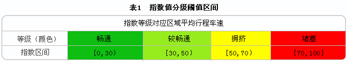

一、什么是上海道路交通指数？
道路交通指数（又称交通拥堵指数）是用量化方法表达道路交通运行拥堵程度，是道路交通状态的数字化表达，类似用温度表达天气冷热程度。道路交通指数反应了一定范围内道路的平均车速和人们对道路交通拥堵程度的感受。上海道路交通指数值用介于0-100之间的数值表达，数值越大，表明道路交通越拥堵，数值越小，表明交通越畅通。
二、为什么要用交通指数？
经过多年的建设，上海已经完成市区重要道路的交通流信息的采集，并实现以红、黄、绿三种颜色代表路况信息发布。但城市道路网络复杂，不同路网车速限制值的不同给拥堵现象描述带来了一定困扰，同样的拥堵状态在不同路网条件下人们感受不一样，如快速路30km/h的旅行车速感觉比较拥挤，但对地面道路却很畅通。
交通拥堵指数在技术上消除了各路网络车速与感觉不一致的问题，充分吸取了人们对不同等级道路拥堵的容忍感受，以用数值方式量化描述道路交通运行状态，提高道路交通运行状态表达精度，同时也达到一个指数值无论对快速路、地面主干路或其他道路具有相同的拥堵含义描述，既可以客观公平的评价交通拥堵，也方便出行者的理解与记忆。
三、指数如何表达拥堵程度？
上海市道路交通拥堵指数的计算，是以一定范围内各个路段实时采集的平均车速为基本参数，按不同等级道路设施要素和通行能力，加权集成并经过标准化后计算生成的。
上海道路交通拥堵指数值用介于0-100之间的数值表达，数值越大，表明道路交通越拥堵，数值越小，表明交通越畅通。在指数0-100数据区间基础上，通过对历史数据统计分析、出行调查和现场验证，分类归纳出人们对快速路、地面道路交通拥堵的习惯感受程度，划分出对应畅通、基本畅通、拥挤和阻塞4种拥堵程度等级，方便人们的理解与记忆。

更多信息，请访问上海市城乡建设和交通发展研究院